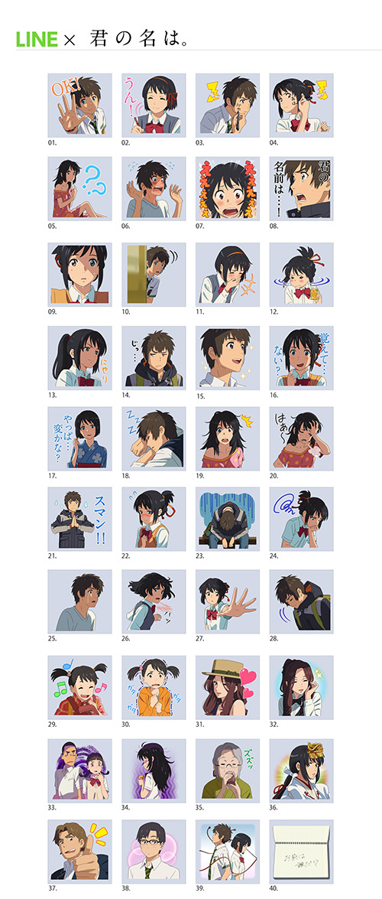
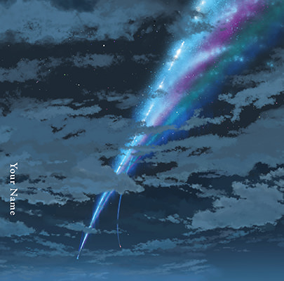
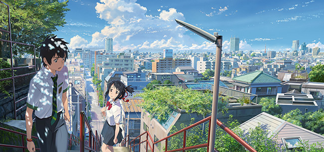
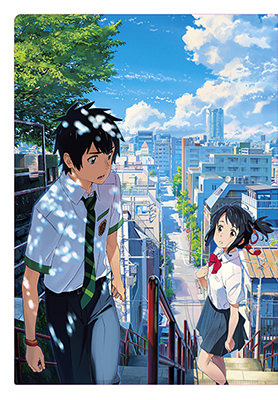
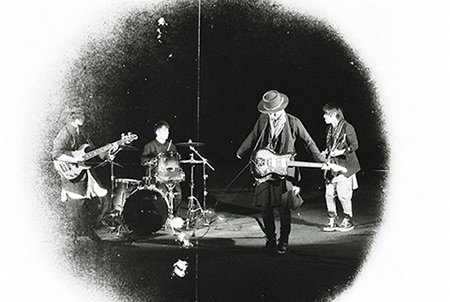

「君の名は。」オーケストラコンサート
2018年4月18日（水）Blu-ray & DVD発売決定！
RADWIMPS×東京フィルハーモニー交響楽団が、スクリーンに映し出される映画全編と共に生演奏を繰り広げた『君の名は。』オーケストラコンサート。
臨場感あふれる音響とRADWIMPSの生歌に映画の感動が再び観客に押し寄せた。
コンサートは2017年12月4日（月）、12月5日（火）の2日間限定で東京国際フォーラムで行われ、合計で約10,000人が酔いしれる贅沢なひと時となった。
4月18日（水）に発売となるBlu-ray＆DVDには2017年12月5日（火）の公演模様全編を収録。
更に映像特典として、リハーサルやバックステージの様子をおさめたドキュメンタリー映像や、アンコール映像を収録。
ステージ写真をふんだんに盛り込んだ豪華ブックレットも封入！
その他、特典として前前前世（movie edit.）フルスコアも封入。
また、メーカー特典として先着予約・購入特典としてオリジナルA4クリアファイルもプレゼント！
※数に限りがございますのでお早めにご予約・ご購入ください。
Loppi・HMVで購入するとオリジナルマグカップの限定特典が付いてきます。
Loppi・HMVでのご予約はこちら
【コンサート鑑賞後の新海誠監督のコメント】
新しく生まれ変わった映画を観ているような、ずっとドキドキし続ける体験でした。
「君の名は。」が公開されて１年半近くですが、音楽は繰り返し演奏されることでどんどん特別な力を帯びていきます。
「君の名は。」の音楽たちはこの先もきっと色々な形をまといながら、すこしずつ形を変えながら、ずっと奏でられ愛され続けていくんだろうな、そういう音楽をRADWIMPSは作ってくれたんだと、あらためて実感しています。
【商品情報】
「君の名は。」オーケストラコンサート [Blu-ray]
価格：￥6,800＋税 品番：TBR28176D
収録時間：本編約120分＋映像特典
仕様：カラー／16:9／2層（BD50G）／MPEG4 AVC ／2.0ch リニアPCM
「君の名は。」オーケストラコンサート [DVD]
価格：￥5,800＋税 品番：TDV28177D
収録時間：本編約120分＋映像特典
仕様：カラー／16:9 LB／片面2層／MPEG2／2.0ch ドルビーデジタル
【映像特典】
・ドキュメンタリー映像
【封入特典】
・ブックレット
・前前前世（movie edit.）フルスコア
【CAST＆STAFF】
出演：RADWIMPS
指揮：栗田博文
演奏：東京フィルハーモニー交響楽団
オーケストラアレンジ : 徳澤青弦
『君の名は。』地上波初放送決定！1月3日にテレビ朝日で
新海誠監督の長編アニメーション映画『君の名は。』が1月3日（水）よる9時からテレビ朝日系列にて地上波初放送されることが決定しました。
地上波初放送に当たり、新海誠監督からも
「自分が子どもの頃はテレビで観る映画はとても楽しみでしたし、そこでしか知ることができなかったものもたくさんありました。そういう意味では、自分が子ども時代に受け取ったものを、今度は自分が違う世代の方たちに届けることができるようになって、ようやく大人になれたような、幸せな気持ちを感じます」
と喜びのコメントを寄せていただきました。
緻密で美しい映像が世代を超えて圧倒的な支持を集め、日本中、さらには世界中をも感動の渦に巻き込んだ、恋と奇跡のストーリーは、まさに新しい年の幕開けを飾るにふさわしい名作です。
新年に、また日本中が恋をする―。
『君の名は。』ハリウッドで実写映画化決定
新海誠監督のアニメーション映画『君の名は。』の実写映画化が決定。
米パラマウント・ピクチャーズとバッド・ロボットとともに実写化に向けて開発を進めております。
ハリウッド版実写映画は、バッド・ロボットのJJエイブラムスとリンジー・ウェバーがプロデュースを担当。脚本は『メッセージ』で2017年アカデミー賞脚色賞にノミネートされたエリック・ハイセラーが手掛けます。また、アニメ版映画のプロデューサー・川村元気が、今作でもプロデューサーとして開発に参加。
なお、本作の日本配給は東宝株式会社が担当。
【原作・脚本・監督・新海誠のコメント】
『君の名は。』は、日本に暮らす僕たちのローカルな想像力、ドメスティックな技術で組み立てた映画です。
そういう作品がハリウッドと交わることで、もしかしたら新しい可能性のようなものを見せてもらえるのかもしれない──
そんな期待をしながら、完成を楽しみに待っています。
【プロデューサー・川村元気のコメント】
これ以上ない、夢のようなチームになりました。JJエイブラムスさんが『君の名は。』をハリウッドで実写化したがっていると聞いたときは信じられない気持ちでした。
バッド・ロボットで彼と会って話すまで「これは夢だ、きっと夢に違いない」そう思っていたのですが、どうやらこれは現実のようです。
数々の名作を現代的なセンスで生まれ変わらせてきたJJエイブラムスさん。
『君の名は。』をハリウッドで実写映画として生まれ変わらせるのにあたりJJエイブラムスさんと彼のチーム以上のクリエーターはいないと思います。
また脚本のエリック・ハイセラーさんが書いた『メッセージ』はここ数年で見たSF映画のなかで最も心を動かされたものでした。
SFとラブストーリーが融合してクライマックスへと突き進む『君の名は。』を、エリックさんならば最高なかたちで表現してくれると確信しています。
JJさん、エリックさんと共に『君の名は。』のハリウッド版実写映画をプロデュースできることを心より誇りに思います。
【東宝株式会社社長・島谷能成のコメント】
日本が誇る『君の名は。』をハリウッド最高のクリエーターの方々と一緒に実写化する機会を楽しみにしています。
「新海誠監督作品 君の名は。美術画集」が当初の7月28日発売から8月2日発売に変更となりました。
Blu-ray＆DVD内に封入しておりますチラシには7月28日発売の記載がございますが、正しくは8月2日発売となります。
書籍『新海誠監督作品 君の名は。美術画集』（一迅社）
監督／新海誠 監修／東宝、コミックス・ウェーブ・フィルム
編集／Febri編集部
定価：本体2,800円＋税
2017年8月2日発売
映画『君の名は。』Blu-ray＆DVDが7月26日ついに発売！
コレクターズ・エディションの映像特典（本編ディスク＋特典ディスク1～3）合計は9時間超えの大ボリューム！
Blu-ray＆DVD 発売に先駆け、コレクターズ・エディションに収録される特典ディスク1～3の映像特典より、新海誠監督の企画書やビデオコンテ、RADWIMPS のレコーディング風景、神木隆之介と上白石萌音のアフレコ風景など、10分以上の映像を特別先行公開！
映像はこちら
大合唱上映会開催決定！！
いよいよ7/26（水）に『君の名は。』のBlu-ray＆DVDが発売となりますが、お客様にお楽しみいただける“劇場ならでは”の企画として、この度、“大合唱上映”を開催することになりました！
昨年末に行われた大合唱上映会の際と同様に、4曲の主題歌の字幕がついた本編の特別版を上映いたします。
上映中は応援＆発生、もちろん大声で歌唱もOKです！コスプレも大歓迎！
池袋シネマ・ロサでの『君の名は。』の上映もそろそろフィナーレとなります。
劇場の大きなスクリーンで皆様の大合唱で送り出しましょう！！
■「君の名は。」大合唱上映会開催のお知らせ
日時：7/23（日）15:00〜の回
場所：池袋シネマ・ロサ
チケット販売：7/23（日）劇場オープン時より、チケット売り場窓口にて座席指定券の受付をいたします。
※料金＝通常料金（一般 1800円、大学生 1500円、高中小生・シニア・夫婦50割引 1000円）
※インターネット販売、電話予約等はございません。
※すでにご購入いただいている前売券でもお引き換えいたします。（池袋シネマ・ロサ名入り前売り券もしくは全国共通券）
詳細はこちら
「君の名は。」オーケストラコンサートにRADWIMPS出演決定！
Blu-ray＆DVDのLoppi・HMV限定特典に付きます「君の名は。」オーケストラコンサートチケット最速先行販売抽選券に関しましてコンサートの詳細が決定致しました。
日本中が恋をした、あの感動がよみがえる！
《コンサート内容》
■公演日
2017年12月4日(月)・5日(火) ※両日とも19：00開演（予定）
■会場
東京国際フォーラム ホールA
■出演
RADWIMPS、東京フィルハーモニー交響楽団
■公演内容
映画『君の名は。』の劇中音楽を、本編映像とともにRADWIMPSと東京フィルハーモニー交響楽団の共演でお贈りする感動の夜！
■チケット料金
全席指定：9,000円（税込）
■注意事項
・未就学児入場不可
商品詳細はこちら
Blu-ray コレクターズ・エディションの為に描き下ろされた6面デジパックイラスト解禁！
ディレクション新海誠監督、キャラクターデザイン田中将賀氏、美術監督丹治匠氏ら豪華スタッフによる描き下ろしイラストが完成！
瀧と三葉が、手を伸ばし、互いを求め合う、２人の気持ちと物語を象徴するような、印象的なイラストに仕上がっています。
こちらはBlu-ray コレクターズ・エディションのみに付く、豪華特典となっております！
商品詳細は下記よりご確認ください。
Blu-ray＆DVDの詳細はこちら
また、TOHO animation STORE、Loppi・HMV、Amazon.co.jpのバンドル商品の描き下ろしイラストも完成！
こちらもぜひチェックしてみてください。
バンドル商品の詳細はこちら
『君の名は。』Blu-rayに収録される映像特典の一部を公開！
7月26日発売の『君の名は。』Blu-ray＆DVD。
コレクターズ・エディション、スペシャル・エディションには映像特典が盛りだくさん。
中でもアフレコや楽曲制作の秘話など、本編を観ながら余すことなくその裏側を語りつくした神木隆之介、上白石萌音、RADWIMPS による「ビジュアルコメンタリー」は、パッケージのためだけに撮り下ろされた貴重な映像。
発売に先駆けて、その一部を公開！
下記よりご覧ください。
映像はこちら
メディア情報
＜TV・ラジオ＞
3月10日（金） TBS系「NEWS23」 インタビュー（新海誠監督）
3月11日（土） TBS「3.11 7年目の真実」 インタビュー（新海誠監督）
※放送日は予定のため予告なく変更する場合があります。ご了承ください。
※お住まいの地域によって放送日が異なります。（一部地域を除く）
詳しくは各局のホームページをご覧ください。
『君の名は。』が、今春開催される、黒板アート甲子園「特別課題の部」の課題に決定！！
『君の名は。』のポスター画像や作中のシーンが、今春開催される黒板アートのコンテスト「黒板アート甲子園」（第2回大会）の課題の模写対象となりました。
ポスターを含む12の課題画像から、好きなものを選んで学校の黒板をキャンバスにチョークで表現していただくコンテストとなります。
参加は高校生が対象で、先生の許可が要りまのでご注意下さい。
作品の受付期間は、3月14日～4月7日です！
詳細はこちらを確認ください。
日学・黒板アート甲子園 応募概要
メディア情報
＜TV・ラジオ＞
1月30日（月） 日本テレビ系 「人生が変わる1分間の深イイ話」 密着（弭間宣伝プロデューサー）
※放送日は予定のため予告なく変更する場合があります。ご了承ください。
※お住まいの地域によって放送日が異なります。（一部地域を除く）
詳しくは各局のホームページをご覧ください。
「君の名は。」LINEスタンプ第二弾、配信開始！
「君の名は。」のLINEスタンプ第二弾が、更に使いやすくなって登場！
今回はキャラクターデザインの田中将賀さん監修の描きおろしSDキャラのスタンプです！
ぜひ、ご利用ください。
「君の名は。」LINEスタンプ第二弾はこちら
メディア情報
＜新聞・雑誌＞
12月26（月） 「anan」 インタビュー（新海誠監督）
＜TV・ラジオ＞
1月8日（日） テレビ朝日系 「題名のない音楽会」 ゲスト（新海誠監督）
※放送日は予定のため予告なく変更する場合があります。ご了承ください。
※お住まいの地域によって放送日が異なります。（一部地域を除く）
詳しくは各局のホームページをご覧ください。
メディア情報
12月17日（土） ABCラジオ 「道上洋三の健康道場」 インタビュー(新海誠監督）
12月18日（日） TBSラジオ 「道上洋三の健康道場」 インタビュー(新海誠監督）
12月24日（土） ABCラジオ 「道上洋三の健康道場」 インタビュー(新海誠監督）
12月25日（日） TBSラジオ 「道上洋三の健康道場」 インタビュー(新海誠監督）
※放送日は予定のため予告なく変更する場合があります。ご了承ください。
※お住まいの地域によって放送日が異なります。（一部地域を除く）
詳しくは各局のホームページをご覧ください。
映画『君の名は。』IMAX上映決定！
2017年1月13日（金）から一部劇場にて『君の名は。』IMAX上映を実施！（2週間限定上映）
IMAXの上映システムによる、大迫力、かつ高品質の映像と音響で『君の名は。』をさらにお楽しみいただけます！
上映劇場はこちら
2016 クリスマス＆年忘れSP『君の名は。』大合唱上映会開催決定！
12月23日（金・祝）、新宿バルト9にて大合唱上映会開催が決定致しました。
鑑賞ご希望の方は、概要、注意事項などをよくご確認の上、当該上映回のチケットをご購入くださいませ。
詳しくはこちらから
メディア情報
12月12日（月） ABCラジオ 「おはようパーソナリティ道上洋三です」 インタビュー(新海誠監督）
12月15日（木） TBS系 「ゴロウ・デラックス」 ゲスト(新海誠監督）
12月17日（土） ABCラジオ 「道上洋三の健康道場」 インタビュー(新海誠監督）
12月18日（日） TBSラジオ 「道上洋三の健康道場」 インタビュー(新海誠監督）
※放送日は予定のため予告なく変更する場合があります。ご了承ください。
※お住まいの地域によって放送日が異なります。（一部地域を除く）
詳しくは各局のホームページをご覧ください。
メディア情報
12月8日（木） TBS 「ゴロウ・デラックス」 ゲスト（新海誠監督）
※放送日は予定のため予告なく変更する場合があります。ご了承ください。
※お住まいの地域によって放送日が異なります。（一部地域を除く）
詳しくは各局のホームページをご覧ください。
劇場パンフレット第2弾、12月9日(金)発売決定！
『君の名は。』劇場パンフレット第2弾が、12月9日(金)に発売されることが決定しました！
みなさんから寄せられた質問に、新海監督が7ページに渡り答えました。
どうぞ、お楽しみに！
メディア情報
11月28日（月） NHK 「クローズアップ現代+」 インタビュー（新海誠監督・川村プロデューサー）
12月4日（日） NHK 「第14回 NHKミニミニ映像大賞 グランプリ」 ゲスト（伊藤プロデューサー）
※放送日は予定のため予告なく変更する場合があります。ご了承ください。
※お住まいの地域によって放送日が異なります。（一部地域を除く）
詳しくは各局のホームページをご覧ください。
全国のHMVで、映画『君の名は。』キャンペーン開催中！
11月14日（月）～1月9日（月・祝）の期間中、全国のHMV店舗にて限定のオリジナルステッカー（ICカードサイズ）や下敷き、ポストカードがもらえるキャンペーンが開催されます。
【キャンペーン概要】
＜その（1）＞
映画『君の名は。』鑑賞後の映画半券をHMV店舗のレジに持ってくると、先着で以下の特典をプレゼント！
11/14（月）～12/11（日） HMVオリジナルステッカー（ICカードサイズ）
12/12（月）～1/9（月・祝） HMVオリジナル下敷き
※ローソンHMV会員への無料登録が必要となります。
＜その（2）＞
HMV店頭・オンラインにてキャンペーン対象商品をご購入頂いたお客様に、先着でポストカード（全6種から1枚ランダム）をプレゼント！
詳細は「君の名は。」×HMV 特設サイトをご確認ください。
メディア情報
＜TV・ラジオ＞
11月9日（水） TBS系 「古館がニュースでは聞けなかった１０大質問!!だから直接聞いてみた」 ゲスト（新海誠監督）
※放送日は予定のため予告なく変更する場合があります。ご了承ください。
※お住まいの地域によって放送日が異なります。（一部地域を除く）
詳しくは各局のホームページをご覧ください。
TOHOシネマズ新宿にて、新海誠オールナイト実施決定！
2016年No.1の動員と興収を記録している『君の名は。』の大ヒットを記念して、新海誠監督作品をオールナイトで上映。
『雲のむこう、約束の場所』『秒速5センチメートル』『星を追うこども』『言の葉の庭』に加え、『君の名は。』を上映します。
冒頭には本イベントへの新海監督のメッセージも上映！
この機会に、ぜひお見逃しなく！！
実施日時：11月11日（金）22:00～
実施劇場：TOHOシネマズ新宿
料金：5,000円
チケット販売方法、販売状況など詳しくは劇場ページをご参照ください。
TOHOシネマズ イベントページ
TOHOシネマズ新宿 イベントページ
『君の名は。』のLINEクリエイターズ着せかえが登場！
着せかえて三葉や瀧と一緒にLINEを楽しもう！！
『君の名は。』LINEクリエイターズ着せかえはこちら
劇場パンフレット第2弾、制作決定！「新海監督に聞いてみよう！（仮）」のコーナーへの質問募集！
『君の名は。』大大大ヒットを記念して、劇場パンフレット第2弾の制作が決定しました！（12月初旬発売予定）
その中の企画として、みなさんから新海監督へのインタビューの質問を募集します。
投稿はこちらからお願いします。
※質問は映画「君の名は。」についてのことに限らせていただきます。
【締切：2016年11月6日（日）】
メディア情報
＜TV・ラジオ＞
10月27日（木）NHK Eテレ (再放送）SWITCHインタビュー達人達 ゲスト（新海誠監督）
※放送日は予定のため予告なく変更する場合があります。ご了承ください。
※お住まいの地域によって放送日が異なります。（一部地域を除く）
詳しくは各局のホームページをご覧ください。
メディア情報
＜TV・ラジオ＞
10月22日（土）NHK Eテレ (再放送）SWITCHインタビュー達人達 ゲスト（新海誠監督）
※放送日は予定のため予告なく変更する場合があります。ご了承ください。
※お住まいの地域によって放送日が異なります。（一部地域を除く）
詳しくは各局のホームページをご覧ください。
新ビジュアル解禁！
本日、一部新聞朝刊の広告で、『君の名は。』大ヒット記念新ビジュアルが解禁されました。
このビジュアルはポスターとして、12月上旬から全国の映画館で順次掲出される予定です。
お近くの劇場で、確認してみてください。
想いと願いを他者に届けようともがくこと、それがこの映画のコアです。
そういう瞬間を、あらためてこのイラストに描きました。
『君の名は。』がとても多くの観客に届きつつあることを、心より感謝しています。
新海誠
上映劇場追加！
今週末10/7（金）、8（土）より、『君の名は。』を上映する劇場が追加されます！
お近くの劇場を確認してみてください。
上映劇場はこちらから
メディア情報
＜TV・ラジオ＞
10月1日（土）NHK Eテレ (再放送）SWITCHインタビュー達人達 ゲスト（新海誠監督）
※放送日は予定のため予告なく変更する場合があります。ご了承ください。
※お住まいの地域によって放送日が異なります。（一部地域を除く）
詳しくは各局のホームページをご覧ください。
LINE公式スタンプ登場！
「君の名は。」LINE公式スタンプが登場です！
劇中の名シーンが満載！
三葉や瀧と一緒にLINEでトークを楽しんでください。
「君の名は。」LINE公式スタンプはこちら

9/24(土)より、TOHOシネマズ日劇で上映決定！
9/24(土)より、有楽町・TOHOシネマズ日劇（日劇1）にて『君の名は。』の上映が決定いたしました！
都内で満員御礼につき上映館が追加されることになりました。
この機会に、ぜひご来場ください。
上映時間など詳しくはこちらから
「君の名は。」新海誠監督 舞台挨拶ツアー、決定！！
9月17日（土）、計3劇場にて、新海 誠監督の舞台挨拶ツアーを実施いたします！
舞台挨拶観覧ご希望の方は、概要、注意事項などをよくご確認の上、当該上映回のチケットをご購入くださいませ。
販売方法詳細は下記劇場名をクリックした先のページをご確認ください。
＜チケット販売開始＞
インターネット：9月14日（水）0時（＝9月13日（火）24時）
窓口：劇場オープン時より
＜実施劇場＞
立川シネマシティ
TOHOシネマズ南大沢
TOHOシネマズ府中
『君の名は。』関連場所訪問（聖地巡礼）についてのお願い
拝啓 平素より格別のご愛顧をいただき、厚く御礼申し上げます。
さて、『君の名は。』公開後、本編中に登場する、または関連のある場所へ、多くのファンの皆様にお越しいただいておりますが、近隣の方々より騒音や早朝深夜の訪問に関する苦情を多数いただきました。関連場所への訪問を予定されている皆様におかれましては、節度のある行動、及びマナーに十分心掛けていただきますようお願い申し上げます。
敬具
「君の名は。」製作委員会
9月10日（土）20時、LINE LIVEで『君の名は。』特番配信決定！
映画『君の名は。』の大ヒットを記念して、9月10日（土）20時からLINE LIVEで、『君の名は。』特番と『秒速5センチメートル』を配信することが決定しました。
新海誠監督が生出演！
どうぞ、お楽しみに。
詳しくはこちら
『君の名は。』×HMVキャンペーン 9月25日（日）まで期間延長！
9月9日までで終了となっておりました、HMVでのキャンペーンが、好評につき延長する事が決定いたしました。引き続き、全国のHMV店舗にてHMV限定のオリジナルステッカー（ICカードサイズ）や、ポストカードサイズカレンダーをプレゼントいたします。
また、9月10日(土)～9月25日(日)の期間限定で、新海誠監督・神木隆之介さん・上白石萌音さんの直筆サイン入りポスターを抽選で1名様にプレゼント！
くわしくはHMVキャンペーンページをご確認ください。
タワーレコード各店で、映画『君の名は。』パネル展開催中！
映画『君の名は。』＆RADWIMPS『君の名は。』大ヒットを記念して、全国のタワーレコード店舗にて映画『君の名は。』のパネル展を開催中！
実施店舗：
渋谷店、京都店、広島店、川崎店、千葉店、吉祥寺店、金沢フォーラス店、イオンレイクタウン店、大分店、新宿店、イオンモール倉敷店、東浦店、明石店、鈴鹿店、難波店、久留米店、橿原店、上田店、苫小牧店、梅田NU茶屋町店、アリオ札幌店、アリオ亀有店、錦糸町店、モレラ岐阜店、浦和店、アリオ橋本店、アミュプラザ博多店、あべのHoop店、タワーミニ ダイバーシティ東京 プラザ店、アリオ八尾店、横浜ビブレ店、那覇リウボウ店、アミュプラザ鹿児島店
※実施期間は店舗により異なりますので、各店舗にご確認ください。
メディア情報
＜新聞・雑誌＞
9月10日（土）アニメージュ 対談インタビュー（新海誠監督×荒木哲郎監督、田中将賀×安藤雅司）
9月10日（土）Febri 作品特集
＜TV・ラジオ＞
9月10日（土）NHK Eテレ SWITCHインタビュー達人達 ゲスト（新海誠監督）
※掲載日は予定のため予告なく変更する場合があります。ご了承ください。
※お住まいの地域によって放送日が異なります。（一部地域を除く）
プロダクションノートをアップ
PRODUCTION NOTE「映画「君の名は。」とは」を、アップしました。
映画制作の貴重な裏話の数々。
こちらからご覧ください。
メディア情報
＜新聞・雑誌＞
9月6日（火） MdN 作品特集
9月10日（土） アニメージュ 対談インタビュー（新海誠監督×荒木哲郎監督、田中将賀×安藤雅司）
9月10日（土） Febri 作品特集
＜TV・ラジオ＞
9月4日（日） スペースシャワーTV 「君の名は。公開＆リリース記念SPECIAL 作品特集
9月10日（土） NHK Eテレ SWITCHインタビュー 達人達 ゲスト（新海誠監督）
※掲載日は予定のため予告なく変更する場合があります。ご了承ください。
※お住まいの地域によって放送日が異なります。（一部地域を除く）
君に感謝！大ヒット御礼舞台挨拶決定！！
9月3日（土） TOHOシネマズ 六本木ヒルズにて、「君に感謝！大ヒット御礼舞台挨拶」を実施します！
舞台挨拶観覧ご希望の方は、概要、注意事項などをよくご確認の上、当該上映回のチケットをご購入くださいませ。
詳しくはこちら
8月26日（金）19時から、ニコニコ生放送で「君の名は。」特番！
8月26日(金)19時から、ニコニコ生放送で、映画公開を記念して、特別番組『神木隆之介・上白石萌音 生出演「君の名は。」公開記念SP』を、配信します。
どうぞ、お見逃しなく！
詳しくはこちら
メディア情報
＜新聞・雑誌＞
8月27日（土） 月刊EXILE インタビュー（新海誠監督）
8月27日（土） ユリイカ 作品特集
8月27日（土） 装苑 インタビュー（神木隆之介・新海誠監督）
8月27日（土） MORE インタビュー（長澤まさみ）
＜TV・ラジオ＞
8月27日（土） NHK BS1 経済フロントライン ゲスト（新海誠監督）
8月28日（日） TOKYO FM 松任谷正隆のDEAR PARTNER ゲスト（新海誠監督）
8月29日（月） フジテレビ系 痛快TV スカッとジャパン ゲスト(神木隆之介・上白石萌音）
8月30日（火） TOKYO FM LOVE CONNECTION ゲスト（新海誠監督）
9月4日（日） スペースシャワーTV 「君の名は。」公開＆リリース記念SPECIAL 作品特集
※掲載日は予定のため予告なく変更する場合があります。ご了承ください。
※お住まいの地域によって放送日が異なります。（一部地域を除く）
『君の名は。』に、各界から絶賛コメントが続々！
試写会で本作をご覧頂いた方から、絶賛コメントが続々と届いております。
各界の著名な方からもコメントが寄せられました。
コメントはこちら
『君の名は。』公開記念、チャリティオークション開催中！
ヤフオクにて、『君の名は。』公開記念チャリティオークション開催中！
貴重なサイン入りグッズ等を、熊本復興支援のためにチャリティー出品しております。
新海誠監督最新作『君の名は。』全国公開記念！チャリティーオークション|reU funding from ヤフオク!
【第1弾】2016年8月22日（月）〜2016年8月28日（日）
【第2弾】2016年8月29日（月）〜2016年9月 4日（日）
詳しくはこちら
新宿マルイ本館にて『君の名は。』期間限定ショップオープン！
8月24日（水）より9月5日まで、新宿マルイ本館の1Fイベントスペースにて、期間限定の『君の名は。』ショップがオープンします。
ショップではこのショップ限定のオリジナル星座早見盤なども販売。
また、3000円（税込）以上お買い上げの方には、「君の名は。」ショッパーで商品をお渡しします。（無くなり次第終了）
詳しくはこちらからご確認ください。
期間中、店内のエスカレーターが『君の名は。』仕様になるなど、嬉しい演出も展開。ぜひ、ご来場ください。
HMV&BOOKS TOKYOで、映画『君の名は。』パネル展＆特別キャンペーン開催中！
9月9日（金）まで、渋谷MODI内5・6・7階にあるHMV&BOOKS TOKYOで、映画『君の名は。』のパネル展を7階にて開催中！
また、HMV&BOOKS TOKYOで、対象商品をご購入のお客様3名様に、RADWIMPSメンバーの直筆サイン入りポスターが当たる抽選キャンペーンも実施！
詳しくはHMV＆BOOKSのキャンペーンページをご確認ください！
メディア情報
＜新聞・雑誌＞
8月20日（土） mina 表紙・インタビュー（長澤まさみ）
8月20日（土） LEONET TIMES インタビュー（上白石萌音）
8月20日（土） DVD＆ブルーレイでーた インタビュー（新海誠監督）
8月20日（土） 月刊ピアノ インタビュー（RADWIMPS）
8月22日（月） TOKYO HEADLINE インタビュー（神木隆之介・上白石萌音）
8月22日（月） 小説現代 インタビュー（新海誠監督）
8月23日（火） ＵＴＢ インタビュー（上白石萌音）
8月23日（火） Ranzuki インタビュー（神木隆之介）
8月23日（火） Soup. インタビュー（神木隆之介）
8月23日（火） JUNON インタビュー（神木隆之介）
8月23日（火） 婦人公論 インタビュー（神木隆之介）
8月23日（火） Street JACK インタビュー（新海誠監督）
8月23日（火） ぴあMUSIC COMPLEX インタビュー（新海誠監督）
8月23日（火） Ray インタビュー（上白石萌音）
8月23日（火） 週刊女性 インタビュー（神木隆之介・上白石萌音）
8月24日（水） 読売新聞 インタビュー（上白石萌音）
8月25日（木） U-NEXTプログラムガイド インタビュー（神木隆之介・上白石萌音）
8月25日（木） レタスクラブ インタビュー（神木隆之介）
8月26日（金） HOT PEPPER Beauty 表紙・インタビュー（神木隆之介）＆女子会企画
8月26日（金） onion qoupon magazine インタビュー（神木隆之介）
8月27日（土） 月刊EXILE インタビュー（新海誠監督）
8月27日（土） ユリイカ 作品特集
8月27日（土） 装苑 インタビュー（神木隆之介・新海誠監督）
8月27日（土） MORE インタビュー（長澤まさみ）
＜TV・ラジオ＞
8月20日（土） TBS 王様のブランチ インタビュー（神木隆之介・上白石萌音・長澤まさみ）
8月20日（土） 日本テレビ系 天才！志村どうぶつ園 ゲスト(神木隆之介）
8月20日（土） 日本テレビ系 世界一受けたい授業 ゲスト(神木隆之介・上白石萌音）
8月23日（火） 日本テレビ系 火曜サプライズ ゲスト（神木隆之介）
8月24日（水） フジテレビ系 モシモノふたり ゲスト（神木隆之介）
8月25日（木） BS11 アニゲー☆イレブン 作品特集
8月26日（金） 日本テレビ系 究極の〇×クイズSHOW!!超問！真実か？ウソか？ ゲスト（神木隆之介）
8月26日（金） スマイルFM デッキ—の映画CaaaaN!! ゲスト（新海誠監督）
8月26日（金） スペースシャワーTV 「君の名は。」公開＆リリース記念SPECIAL 作品特集
8月28日（日） TOKYO FM 松任谷正隆のDEAR PARTNER ゲスト（新海誠監督）
※掲載日は予定のため予告なく変更する場合があります。ご了承ください。
※お住まいの地域によって放送日が異なります。（一部地域を除く）
新海誠監督舞台挨拶ツアー、詳細決定！！
8月26日（金）、8月27日（土）の二日間、計12劇場にて行われる、新海誠監督の舞台挨拶ツアーの、チケット販売方法など詳細が決定しました。
ご希望の日時、劇場の詳細をよくご確認の上、チケットをお求めください。
詳しくはこちら
「君の名は。× FUN!TOKYO!モバイルスタンプラリー」情報追加！
8月26日（金）から開始される、JR東日本「FUN!TOKYO!」とのコラボ企画「君の名は。× FUN!TOKYO!モバイルスタンプラリー」の詳細が発表されました。
ラリー対象となる駅は新宿駅、代々木駅、千駄ヶ谷駅、信濃町駅、四ツ谷駅、東京駅の6駅！
他、掲出場所の細かい情報や、遊び方などは特設ページをご覧ください！
特設ページはこちら
※スタンプラリーは8/26～9/30の開催となります。
メディア情報
＜新聞・雑誌＞
8月16日 (火) 野性時代 インタビュー（神木隆之介・新海誠監督）
8月16日 (火) J Movie Magazine 表紙（神木隆之介）＆「君の名は。」特集インタビュー（神木隆之介・野田洋次郎・新海誠監督）
＜TV・ラジオ＞
8月16日（火） 日本テレビ系 今夜くらべてみました ゲスト（神木隆之介）
8月16日（火） BSジャパン シネマ・アディクト ゲスト（新海誠監督）
8月18日（木） 日本テレビ系 あのニュースで得する人損する人 ゲスト（神木隆之介）
8月19日（金） BSジャパン シネマ・アディクト ゲスト（新海誠監督）
8月19日（金） 日本テレビ系 沸騰ワード10 ゲスト（神木隆之介、上白石萌音）
8月20日（土） 日本テレビ系 世界一受けたい授業 ゲスト（神木隆之介、上白石萌音）
8月26日（金） BSジャパン シネマ・アディクト ゲスト（新海誠監督）
※掲載日は予定のため予告なく変更する場合があります。ご了承ください。
※お住まいの地域によって放送日が異なります。（一部地域を除く）
詳しくは各局のホームページをご覧ください。
「君の名は。」新海誠監督舞台挨拶ツアー、決定！！
8月26日（金）、8月27日（土）の二日間、計12劇場にて、新海 誠監督の舞台挨拶ツアーを実施いたします！
舞台挨拶観覧ご希望の方は、概要、注意事項などをよくご確認の上、当該上映回のチケットをご購入くださいませ。
詳しくはこちら
「君の名は。」公開記念舞台挨拶決定！！
8月28日（日） TOHOシネマズ 六本木ヒルズにて、公開記念舞台挨拶を行います！
舞台挨拶観覧ご希望の方は、概要、注意事項などをよくご確認の上、当該上映回のチケットをご購入くださいませ。
詳しくはこちら
新海監督ディレクション、サントリー天然水コラボCM公開！
本日、サントリー天然水×「君の名は。」特設WEBページにて、映画「君の名は。」とのコラボCM映像が公開されました！
CM映像では、三葉が「ヨーグリーナ&南アルプスの天然水」を手に、様々な感情を表現しています。
サントリー天然水が持つ清涼なイメージと絶妙にマッチした新海ワールドを、映画公開に先駆け、是非お楽しみ下さい！
サントリー天然水×「君の名は。」特設ページ
全国のHMVで、映画『君の名は。』キャンペーン実施！
8月15日（月）～9月9日（金）にて、全国のHMV店舗にてHMV限定のオリジナルステッカー（ICカードサイズ）や、ポストカードサイズカレンダーをプレゼントするキャンペーンが行われます！
また、新海監督のサイン入りポスターなどが当たる抽選キャンペーンも実施！
詳しくはHMVのキャンペーンページをご確認ください！
『君の名は。』トレイン運行！
映画公開を記念して、JR山手線で、映画『君の名は。』ADトレインが運行します！
ADトレイン車内は、映画『君の名は。』で埋め尽くされます。
また車内では、ここでしか見ることのできない特別映像を放映します。
どうぞ、お楽しみに！
運行期間：8月18日（木）～9月2日（金）
JR山手線E235系ADトレイン（1編成）
※車両整備等のため運行しない日もあります
※映画『君の名は。』ADトレイン（山手線新型車両E235系）の運行状況、列車位置情報は「JR東日本アプリ」でご確認頂けます。
メディア情報
＜新聞・雑誌＞
8月9日（火） 別冊少年マガジン インタビュー（新海誠監督）
8月9日（火） ニュータイプ3号連載企画③ 作品大特集＆インタビュー（神木隆之介）
8月9日（火） メンズジョーカー インタビュー（新海誠監督）
8月9日（火） FINE BOYS インタビュー（神木隆之介）
8月9日（火） アニメディア インタビュー（神木隆之介・新海誠監督）
8月10日（水） TV LIFE インタビュー（神木隆之介）
8月10日（水） 週刊少年マガジン インタビュー（上白石萌音・新海誠監督）
8月10日（水） PASH! インタビュー（神木隆之介）
8月10日（水） BAILA インタビュー（神木隆之介）
8月10日（水） bea's up インタビュー（神木隆之介）
8月12日（金） QLAP! インタビュー（神木隆之介）
8月12日（金） プラスアクト インタビュー（神木隆之介）
＜TV・ラジオ＞
8月10日（水） 日本テレビ系 1億人の大質問!? 笑ってコラえて！ ゲスト（神木隆之介）
8月12日（金） フジテレビ系 全力！脱力タイムズ ゲスト（神木隆之介）
※掲載日は予定のため予告なく変更する場合があります。ご了承ください。
※お住まいの地域によって放送日が異なります。（一部地域を除く）
詳しくは各局のホームページをご覧ください。
『奈良健康ランド』でコラボキャンペーン開催！
奈良県天理市に所在する『奈良健康ランド』にてコラボキャンペーンが開催されます！
期間は8月5日（金）から9月11日（日）。
期間中、映画のスタンディパネルや映画紹介パネルの掲出、館内スタンプラリーなどが実施されます。
また、キャンペーンの感想を添えて応募されると、新海監督のサイン入りグッズなどが当たる抽選も行います。
さらには、8月5日（金）、8月19日（金）には、映画鑑賞券などが当たるビンゴ大会を開催。
奈良健康ランドを満喫して、映画「君の名は。」も楽しんでください！
詳しくはこちら
JR東日本『FUN！TOKYO！』コラボ企画
モバイルスタンプラリー開催決定！！
8月26日（金）～9月30日（金）の間、映画にも登場する6か所の駅でモバイルスタンプラリーを実施します！
6駅制覇するといい事があるかも？？
詳細は後日またお知らせいたします。
8/20（土）、テレビ東京「サタ☆シネ」枠にて『秒速５センチメートル』放送決定！
『君の名は。』公開を記念して、新海誠監督作品『秒速５センチメートル』の放送が決定しました！
『秒速５センチメートル』
8月20日(土)深夜3：15～「サタ☆シネ」（テレビ東京）枠にて
『君の名は。』特別映像＆インタビューも！
※放送日時は予定です。予告なく変更する場合がありますのでご了承ください。
※詳しくはこちら
映画『君の名は。』公開記念特番 『言の葉の庭』ノーカット放送決定！
映画『君の名は。』の公開を記念して、新海誠監督の『言の葉の庭』（2013年公開）をノーカットで放送することが決定しました！
神木隆之介をナビゲーターに迎え、新海ワールドの魅力が凝縮した珠玉の名作をお送りします。
詳しくはこちら
映画公開記念特番、放送決定！
映画公開を記念して、特別番組の放送が決定しました！
「映画『君の名は。』公開記念特番 新海誠、この才能に日本中が恋をする」
最新作『君の名は。』で主人公・立花瀧の声を務めた神木隆之介が、新海誠監督＆本作を誰よりも熱く徹底解説！
更に、豪華キャストによる濃密トーク、聖地巡礼など秘蔵映像が満載。
話題の『君の名は。』をもっと楽しめる特別番組です！
詳しくはこちら
書店と映画館で、小冊子「『君の名は。』スペシャルガイドブック」を配布
小冊子「『君の名は。』スペシャルガイドブック」を、書店と映画館で無料配布いたします。
神木さん＆上白石さんインタビューや新海監督の直筆コメントも。
書店は8月頭より、映画館は8/6（土）より順次配布予定。
詳しくはお近くの書店、映画館へお問合せください。
※なくなり次第配布を終了させていただきます
※配布していない書店もございます
メディア情報
7月30日（土） ROCKIN' ON JAPAN インタビュー（神木隆之介）
7月31日（日） ギンザネットタイムズ 表紙・インタビュー（神木隆之介）
8月1日（月） Jetstar インタビュー(上白石萌音）
8月1日（月） mini インタビュー（神木隆之介）
8月1日（月） 月刊Audition インタビュー(上白石萌音）
8月1日（月） ROLA インタビュー（神木隆之介）
8月1日（月） Rooftop インタビュー（新海誠監督）
8月4日（木） 日経エンタテインメント！ インタビュー（新海監督・神木隆之介×上白石萌音・RADWIMPS）
8月4日（木） 日経トレンディ インタビュー（新海誠監督）
8月5日（金） キネマ旬報 インタビュー(上白石萌音）
8月6日（土） WiNK UP インタビュー（神木隆之介）
8月6日（土） CREA インタビュー（神木隆之介）
8月6日（土） ダ・ヴィンチ 表紙・「君の名は。」特集（神木隆之介×新海誠監督）
8月6日（土） Omosan Street インタビュー（神木隆之介）
8月6日（土） steady. インタビュー（神木隆之介）
8月6日（土） ESSE インタビュー（神木隆之介）
8月6日（土） 大人のおしゃれ手帖 インタビュー（新海誠監督）
※掲載日は予定のため予告なく変更する場合があります。ご了承ください。
メディア情報
7月19日（火） CUT インタビュー（新海監督・野田洋次郎）
7月19日（火） チャンピオンRED インタビュー（新海誠監督）
7月20日（水） kukka インタビュー（上白石萌音）
7月20日（水） キネマ旬報 インタビュー（神木隆之介）
7月20日（水） 声優男子 撮影＆インタビュー（石川界人）
7月21日（木） キネマ旬報 夏の増刊号 作品大特集＆インタビュー（神木隆之介・上白石萌音・新海誠監督・RADWIMPS・田中将賀・安藤雅司）
※掲載日は予定のため予告なく変更する場合があります。ご了承ください。
メディア情報
7月9日（土） ニュータイプ 3号連載企画②インタビュー（神木隆之介）
7月9日（土） KRISPY! インタビュー（上白石萌音）
7月10日（日） 高校生新聞 インタビュー（神木隆之介）
7月12日（火） 日本映画navi インタビュー（神木隆之介＆新海誠監督）
7月12日（火） CINEMA SQUARE インタビュー（神木隆之介・新海誠監督）
7月12日（火） Cinema★Cinema インタビュー（神木隆之介）
7月12日（火） vikka インタビュー（神木隆之介）
7月14日（木） J Movie Magazine インタビュー（神木隆之介・上白石萌音）
※掲載日は予定のため予告なく変更する場合があります。ご了承ください。
7/7（木）完成披露試写会会場からLINE LIVE生中継決定＆『言の葉の庭』本編配信も！
7/7（木）18:30より、LINE LIVEにて、「新海誠監督 『君の名は。』SPトーク＋映画『言の葉の庭』本編」を配信します。
当日行われる完成披露試写会会場から舞台挨拶を生中継！
その後、神木隆之介、上白石萌音、長澤まさみ、新海誠監督出演のスペシャルライブトーク！
さらに、新海監督の代表作『言の葉の庭』を配信します。
『君の名は。』公開を前に、ぜひこちらをお楽しみください！
配信はこちら
超レアグッズをプレゼント！"君の感想"キャンペーン開催！！
監督＆出演者サイン入り台本ほか超レアグッズが当たる、"君の感想"キャンペーンを実施します。
映画『君の名は。』をご覧になった方の感想を大募集！
公式サイトやTwitterからご参加ください。
詳しくはこちら
「新海誠の描く宙（ソラ）展」開催！
本日、7/1（金）より、東京ドームシティの宇宙ミュージアム「TeNQ（テンキュー）」（東京都文京区）にて、『新海誠の描く宙（ソラ）展』が開催されました！
『君の名は。』制作の貴重な資料や、作画、絵コンテなど、美しい風景描写が描かれるまでの過程をご覧いただく事ができます。
他にも、新海監督に宇宙に対する想いを語っていただいたインタビュー映像や、過去作に関する宇宙トピックスなど、TeNQならではの展示が盛りだくさん！
是非、お越しください！
開催期間：2016年7月1日(金)〜11月6日(日)
会場：宇宙ミュージアムTeNQ 企画展示室ほか
入場料：TeNQ入館料に含む
詳しくはこちら
メディア情報
7月2日（土） 「FLIX PLUS」 インタビュー（神木隆之介・新海誠監督）
7月2日（土） 「デートスペシャルなび」 作品特集＆インタビュー（新海誠監督）
7月7日（木） 「進路新聞」 インタビュー(上白石萌音）
7月9日（土） 「ニュータイプ」 3号連載企画②インタビュー（神木隆之介）
7月9日（土） 「KRISPY!」 インタビュー（上白石萌音）
7月10日（日） 「高校生新聞」 インタビュー（神木隆之介）
※掲載日は予定のため予告なく変更する場合があります。ご了承ください。
Twitterプレゼントキャンペーン実施中！
映画『君の名は。』公式Twitterをフォローしてくれた方の中から、抽選で5組10名様を、7/7（木）の完成披露試写会にご招待！
ご希望の方は必ず、
1. 映画『君の名は。』公式Twitter（@kiminona_movie）をフォローしてから、
2. ハッシュタグ【#君の名は。 #見たい】と、予告２のURL【https://youtu.be/3KR8_igDs1Y】をつけて、
3. 映画への想いや期待の言葉をつぶやいてください。
6/30（木）正午締切。
皆さんのご応募を、お待ちしております！
詳しくはこちら
RADWIMPSのニューアルバム「君の名は。」のジャケット写真公開！
8/24(水)にリリースされる、RADWIMPSのニューアルバム「君の名は。」のジャケット写真が公開されました。
初回限定盤のジャケットビジュアルは、映画『君の名は。』の物語が綴られた古書に見立てて制作された本がモチーフ。
通常盤は映画のキーとなる彗星が夜空に鮮やかに描かれたジャケットビジュアルになります。
[初回限定盤]- 
[通常盤]
予告第2弾をYahoo!映画で先行配信中！
『君の名は。』の予告第2弾を、Yahoo!映画で先行配信いたしました。
RADWIMPSが手がけた主題歌の1つ『スパークル』も本邦初公開！
ぜひ、ご覧ください！
『君の名は。』予告第2弾はこちら
発売から3日で10万部突破!! 『君の名は。』原作小説、好評発売中!! 書籍特設サイトがオープン！
映画公開に先駆けて発売された原作『小説 君の名は。』が大反響を受けて発売からわずか3日でスピード重版が決定！10万部を突破しました。
そんな新海誠監督の小説をクローズアップした、書籍特設サイトがオープン！
新海監督みずから手がけた原作『小説 君の名は。』に加え、既刊の試し読みもできる新海誠書籍特設サイトを是非チェックください！
新海誠書籍特設サイトはこちら
新ビジュアル解禁！
本作の新ビジュアルが解禁となりました。
都内某所の階段で瀧と三葉がすれ違うこのビジュアルは、「出会うはずのない、二人の出逢い」という物語のテーマに合わせ、特別に描きおろされたオリジナルイメージビジュアルです！
このビジュアルを使用した大型バナーが、7/1（金）より全国の映画館で順次掲出される予定です（一部劇場除く）。
細部まで描きこまれたこのビジュアルを、映画館でぜひチェックしてみてください！

オリジナルクリアファイル付き特別前売券、7/2（土）発売！
新ビジュアルを全面に使用したA4オリジナルクリアファイル付き特別前売券が、7/2（土）より全国の映画館で発売されます。
全国合計3万名様限定！
この機会に、ぜひお求めください！
※特典は劇場で劇場前売券をご購入頂いたお客様限定の特典です。
※前売券1枚ご購入につき、クリアファイルを1枚プレゼント！
※特典は数量限定です。終了の際はご了承ください。
※プレゼントは非売品です。転売目的での購入はご遠慮ください。
※詳細は劇場スタッフにお問い合わせください。
前売券販売劇場はこちら

公式Twitterアカウント、オープン！
映画『君の名は。』公式Twitterアカウントを開設しました。
スタッフが、映画情報を随時お届けします。
フォローやリツイートを、ぜひお願いします。
映画『君の名は。』公式Twitterアカウントはこちら
RADWIMPS×映画『君の名は。』コラボレーションスペシャルカット
メンバーを描き下ろしたのは田中将賀
8/24（水）リリースになるRADWIMPSニューアルバム『君の名は。』の初回限定盤ブックレットに、スペシャルカットが掲載されることが決定しました！
RADWIMPSのメンバーが映画『君の名は。』の印象的なシーンにシルエットとなって登場する場面を、本作のキャラクターデザインを手がけた田中将賀が、このために特別に描き下ろしたスペシャルカットです。
どうぞ、お楽しみに！
紀伊國屋書店・TSUTAYAにて『君の名は。』特別キャンペーンスタート
新海誠監督自らが書き下ろした『君の名は。』原作小説発売を記念して、紀伊國屋書店とTSUTAYAにて購入者限定スペシャルキャンペーンがスタート！
【紀伊國屋書店キャンペーン詳細】
「小説 君の名は。」購入者で下記プレゼントキャンペーンにご参加いただけます。
①抽選で50組100名様へ、映画『君の名は。』鑑賞券プレゼント！（2016年8月15日〆切）
②購入者全員へ“特別限定カバー”プレゼント！ (6/18～終了まで)
③デジタル特典”プレゼント！（2016年9月12日〆切）
※①③については、購入時に紀伊國屋ポイントカードをご提示いただいたお客様が対象となります。
詳しい参加条件、配布方法については店舗までお問い合わせください。
紀伊國屋書店 キャンペーン詳細ページはこちら
【TSUTAYAキャンペーン詳細】
「小説 君の名は。」購入者全員にオリジナルしおりプレゼント (6/18～終了まで)
詳しくは店舗までお問い合わせください。
『君の名は。』Anime Expo2016で、世界初上映決定！
映画『君の名は。』が、北米最大のアニメ・コンベンション「Anime Expo」で、特別上映作品として世界初上映されることが決定しました！
この上映が、本作のワールドプレミアとなります。
【イベント概要】
Makoto Shinkai's "your name." World Premiere & Panel
会場：Los Angeles Convention Center
実施日：7月3日（日）
【プログラムマネージャー ジェレミア・ファジャード氏 コメント】
今回、新海誠監督の最新作をお見せする機会を得られてとても光栄です。2013年に「言の葉の庭」の英語吹替版を上映したときも大好評でした。我々のお客様もそのような才能溢れる世界的な監督の最新作をきっと楽しんでくれることと思います。
【神木隆之介 コメント】
『君の名は。』がアニメエキスポという素晴らしいイベントで上映される事は、作品に関わらせていただいた者として誇りに思います。新海監督の作品は唯一無二の作品ばかりです。「君の名は。」はその最高傑作です。世界中の方々が必ず美しいと感じる素敵な物語になっています。世界がこの作品に恋をするでしょう。
月刊「ニュータイプ」で神木隆之介の短期連載がスタート！！
月刊「ニュータイプ」6月10日（金）発売号から、神木隆之介が新海誠監督作品の魅力を語る連載企画がスタート。
かねてから新海誠の大ファンと公言する神木が、8月26日（金）「君の名は。」の公開に向けて、監督の作品の魅力を熱く語り尽くします！
連載1回目は「言の葉の庭」。
どうぞ、お楽しみに！
追加キャスト発表！
このたび、『君の名は。』に、長澤まさみ、市原悦子ほか、豪華キャストが加わることが発表されました。
主人公・瀧（声：神木隆之介）が密かに想いを寄せるバイト先の先輩・奥寺ミキを長澤まさみが、ヒロイン・三葉（声：上白石萌音）の祖母・宮水一葉を市原悦子が担当します。
【長澤まさみコメント】
新海監督の作品は本当に映像が美しくて、リアルとアニメが混在している感覚がすごく心地良いです。「君の名は。」も映像を一目観ると、一気に空気感が身体の中に入ってきて、とても気持ち良い作品だと思います。“奥寺先輩”は主人公の憧れの女の人なので、大人っぽさ、優しさ、少しだけ色っぽさが出るよう意識しました。子供の頃から「家政婦は見た！」と「まんが日本昔ばなし」がとっても大好きで、今回市原さんのお声を聞くのを楽しみにしていました。市原さんと一緒の作品に参加できて、本当に光栄に思います。
【市原悦子コメント】
アニメはどこまでも広がる世界で、そこに声の出演として参加するのは昔から大好きでした。「君の名は。」では、都会に憧れる若者たちの、掴みどころのない、希望と不安で揺れているような心情が描かれていて、それは私には新鮮で触れたことのない世界でした。分からないからこそ面白くて、やってみたいと思い、受けさせていただきました。新海監督はとても丁寧に演出され、出演者にもとても優しく、これも驚きでした。
【新海誠監督コメント】
「憧れの先輩」役である奥寺ミキは、ともすれば記号的表現の範囲内でも収まってしまうキャラクターです。しかし長澤まさみさんの声は、そこに圧倒的な実在感と共感性を吹き込んでくれました。劇中では描いていない奥寺の陰影までも感じさせるような長澤さんの芝居に、すべての「男の子たち」はどぎまぎさせられてしまうはずです。
ヒロインの祖母である宮水一葉は、先祖から受け継がれてきた知恵と神秘の語り部であり、同時に孫に昔話を語る身近なお祖母ちゃんでもあります。「まんが日本昔ばなし」に育てられた僕にとっては、ですから一葉役は市原悦子さん以外にあり得ませんでした。最高の語りをいただけました。ご出演いただけたことに、ひたすら感激しています。
また、三葉の妹・四葉を人気子役の谷花音、三葉の同級生・勅使河原克彦をMen's non-noの人気モデル・成田凌、同じく三葉の同級生・名取早耶香を悠木碧、瀧の同級生・藤井司を島﨑信長、同じく瀧の同級生・高木真太を石川界人といった、人気実力を兼ね備えた若手声優の３人が、それぞれ声を担当します。
-
立花瀧
（CV：神木隆之介） -
宮水三葉
（CV：上白石萌音） -
奥寺ミキ
（CV：長澤まさみ） -
宮水一葉
（CV：市原悦子）
-
勅使河原克彦
（CV：成田凌） -
名取早耶香
（CV：悠木碧） -
藤井司
（CV：島﨑信長） -
高木真太
（CV：石川界人） -
宮水四葉
（CV：谷花音）
カドフェスで『君の名は。』ブックカバーを手に入れよう！
6/18（土）から全国の書店で、角川文庫恒例の夏のフェア「カドフェス 2016」が開催！
フェア対象本を1冊買うとその場で、『君の名は。』ほか5種類のブックカバーがもらえます。
この機会に、ぜひ書店へお立ち寄りください。
詳しくはこちら
メディア情報
6月4日（土） 「T.」 対談インタビュー（神木✕新海監督）＆制作現場訪問
6月10日（金） 「ニュータイプ」 3号連載企画①インタビュー（神木）
※掲載日は予定のため予定なく変更する場合があります。ご了承ください。
RADWIMPS ニューアルバム「君の名は。」8/24（水）リリース決定！
本作のサウンドトラックでもある、RADWIMPSのニューアルバム「君の名は。」が8/24（水）にリリースされることが決定しました！
すでに予告で使用されている「前前前世」に加え、ボーカル楽曲「スパークル」「夢灯籠」「なんでもないや」の主題歌4曲と劇伴22曲が収録されます。
映画『君の名は。』の世界観を余すところなく詰め込んだこのアルバムを、映画とともにどうぞご期待ください！
RADWIMPS 「君の名は。」
2016.8.24 発売
初回限定盤 : CD＋DVD+BOOK, LPサイズ(32cm×32cm)仕様 6400円＋税 / UPCH-29222
通常盤 : CDのみ 2700円＋税 / UPCH-20423
＜初回限定盤：DVD内容＞
・レコーディング風景
・ピアノソロスタジオライブ（演奏：野田洋次郎）
「三葉のテーマ」「秋祭り」
・RADWIMPS、アニメーション制作スタジオ訪問の模様
・新海誠監督 × RADWIMPS 対談
・新海誠監督インタビュー
＜初回限定盤：BOOK内容＞
・RADWIMPS ×「君の名は。」スペシャルブックレット
映画の場面カット、RADWIMPSメンバーフォト他
・「三葉のテーマ」「秋祭り」ピアノ譜（ピアノアレンジ：野田洋次郎）
＜初回・通常盤共通：CD収録内容＞
・主題歌4曲「前前前世」「スパークル」「夢灯籠」「なんでもないや」
・劇伴22曲
「T.」の特別付録に、『君の名は。』の特集mini bookが！
6/4（土）にTOHOシネマズなどで発売されるシアターカルチャーマガジン「T.」33号に、特別付録として、『君の名は。』の特集mini bookがついてきます。
神木隆之介が『君の名は。』の制作スタジオに潜入取材や、新海監督×神木の対談など、盛りだくさん。
どうぞ、お楽しみに！
※掲載日は予定のため、予告なく変更する場合があります。ご了承ください。
『君の名は。』完成披露試写会＆舞台挨拶
生中継決定！
映画『君の名は。』の完成披露試写会を開催いたします。
当日は、キャスト・スタッフによる舞台挨拶も予定しております。
また、この舞台挨拶を全国の劇場で生中継いたします。
皆さま是非、ご応募ください。
詳しくはこちら
新海誠監督執筆の原作小説『君の名は。』
刊行決定！
新海誠監督みずから執筆した映画『君の名は。』の原作小説を、映画公開にさきがけ、6月18日（土）に角川文庫から発売されることが決定しました。
登場人物の心情の繊細な描写は、小説ならでは。
原作小説と映画で、『君の名は。』という傑作を2度味わってみてください。
『小説・君の名は。』
価格：560円（税別）
6月18日（土）発売
『君の名は。』コミカライズ、スタート！
5/27（金）発売の「月刊コミックアライブ」7月号から、『君の名は。』のコミカライズがスタートします！
『君の名は。』
琴音らんまる 原作：新海誠
どうぞ、お楽しみに！
ＲＡＤＷＩＭＰＳが音楽を担当することが決定！

映画『君の名は。』の音楽を、ＲＡＤＷＩＭＰＳが担当することが決定しました！
複数のボーカル曲を含む20曲以上の劇中音楽全てを制作しており、ＲＡＤＷＩＭＰＳとしても初めての試みとなっています。
また、ボーカル曲の1つである「前前前世」が入った予告を、Yahoo!映画でWEB先行配信中！
ぜひ、ご覧ください。
『君の名は。』予告はこちら
【ＲＡＤＷＩＭＰＳコメント】
—映画と、僕たちの音楽が掛け合わさることがあるとしたら−
それは単純にオファーを受けて主題歌を作るという関係でないものでありたいと、漠然と思っていました。お互いの領域にオーバーラップし、響き合い、結びつき、共に冒険ができるようなものであったら、素敵だなぁと思っていました。今回の『君の名は。』という作品と僕たちＲＡＤＷＩＭＰＳは間違いなくそういう関係にあったように思います。一昨年の冬に新海監督とお会いし、そのまっすぐな人柄とこの脚本に惹かれました。そしてこの１年間、僕たちはひと足先に『君の名は。』の世界にどっぷりと浸かることになりました。おそらくすべてのシーンの、すべての台詞が今は言えると思います。但し、声は声優さんたちが入れる前の監督のあてたもの、絵も監督が描いてくださったラフのコンテです。ここからいよいよ仕上げの作業でどんなマジックが起きるのか、最後まで楽しみで仕方がありません。この作品に携われたことを光栄に思うと共に、皆さんの人生に寄り添い、心の中にずっと残っていく作品になるよう最後まで心を研ぎすまして全力で取り組みたいと思います。
【新海誠監督コメント】
誰に音楽をやってほしいかと問われた時、実現の可能性を考えもせずＲＡＤＷＩＭＰＳが好きだと答えました。その後、洋次郎さんにお会いする機会に恵まれ、正式に一緒にやろうと決まった時から今のこの瞬間まで、ずっと夢を見ているように幸せです。
ＲＡＤＷＩＭＰＳの作り出す楽曲群は10年前から常に新しく、音楽の最前線です。歌詞には「日本語はこんなに自由で豊かなんだ」という驚きが常にあります。最初の1曲として『前前前世』を受け取ったのはもう1年以上も前ですが、その日の天気も興奮も覚えています。部屋に座ったままではとても聴けず、外に出て歩きながら聴き、雨が降ってきても繰り返し聴き続けました。まさに映画に捧げられた曲で、胸が詰まりました。
『君の名は。』は、台詞、楽曲、野田さんの声など音の主役がシーンの中でどんどん移り変わっていくような、新しい感覚のアニメーション映画になるはずです。
【神木隆之介コメント】
「前前前世」を初めて聴いた時、これまで感じた事のない衝撃を受け鳥肌が立ち、自分の中で「君の名は。」の世界観が更に鮮やかになりました。
ＲＡＤＷＩＭＰＳさんの素敵な曲を聴きながら、これから始まる声撮りに向けて更に気合が入りました。
新ポスタービジュアル解禁
映画『君の名は。』新ポスター用ビジュアルが完成しました。
新ポスタービジュアルを使用したポスター、チラシは、4月16日（土）より全国の映画館で順次掲出される予定です。
（一部劇場除く。詳しくはお近くの劇場へお問い合わせください。）
どうぞ、お楽しみに！
新海誠監督作品 NHK BSプレミアムで放送！
NHK BSプレミアムで、新海誠監督3作品を放送します！
3/8(火)23:45～ 「秒速5センチメートル」
3/18(金)23:15～ 「ほしのこえ」
3/25(金)23:45～ 「言の葉の庭」
どうぞ、お楽しみに！
メディア情報
2月4日（木）「日経エンタテインメント!」インタビュー
（新海誠監督×キャラクターデザイン：田中将賀）
※掲載日は予定のため予告なく変更する場合があります。ご了承ください。
新海誠監督作品 期間限定無料配信中！
新海誠監督最新作『君の名は。』の製作発表を記念して、『言の葉の庭』『星を追う子ども』『秒速5センチメートル』『雲のむこう、約束の場所』を、GYAO!で、12月17日（木）まで、HDで無料配信致します。
この機会に、ぜひご覧ください。
詳しくはこちら
新海監督のインタビューが掲載されました！
GYAO!トレンドニュースにて、新海監督のインタビュー記事が掲載されました。
ぜひ、ご覧ください！
ポスト宮崎駿の急先鋒、新海誠監督が手がける東宝メジャー作品『君の名は。』で目指したものとは
「言の葉の庭」ほか新海誠監督4作品をGYAO!で無料配信 見どころを自身が解説